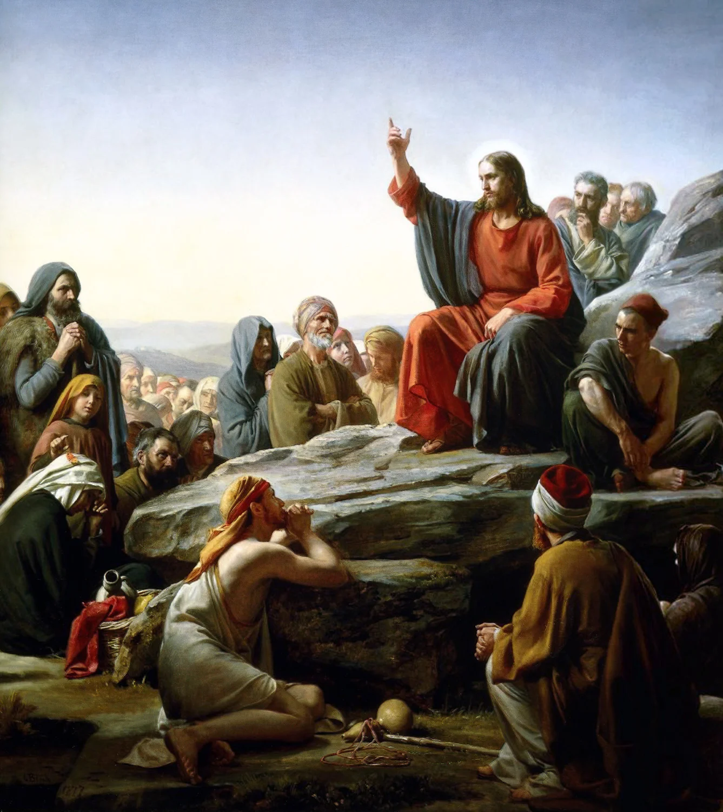
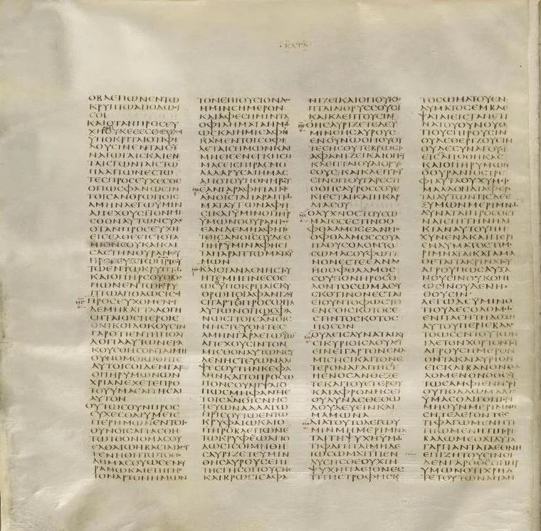
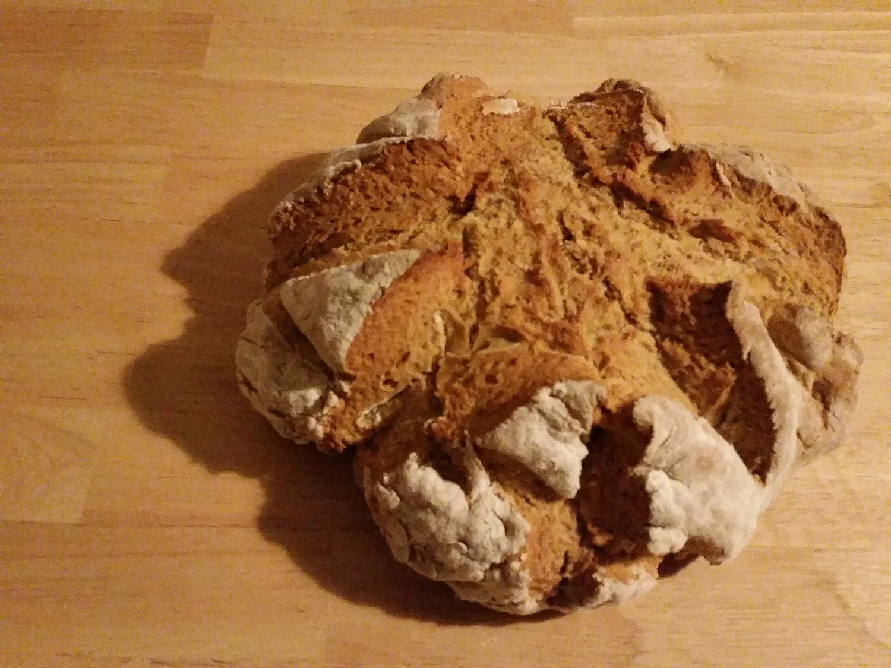
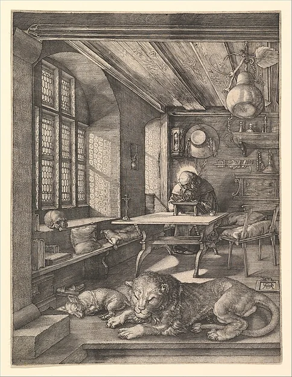
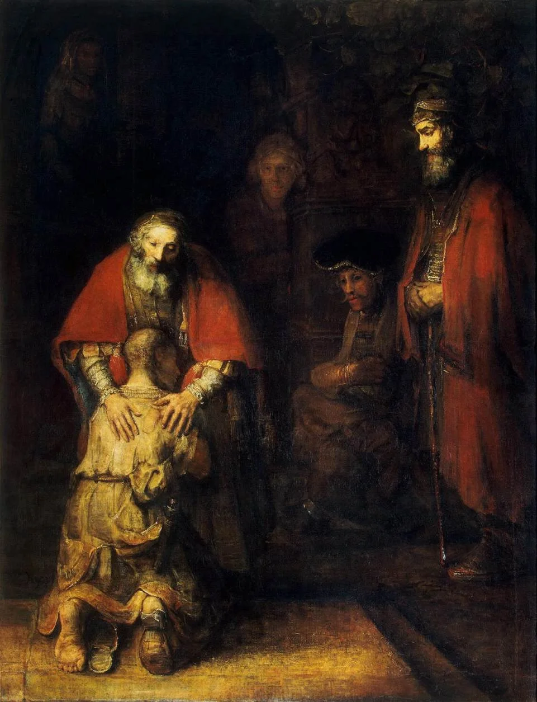
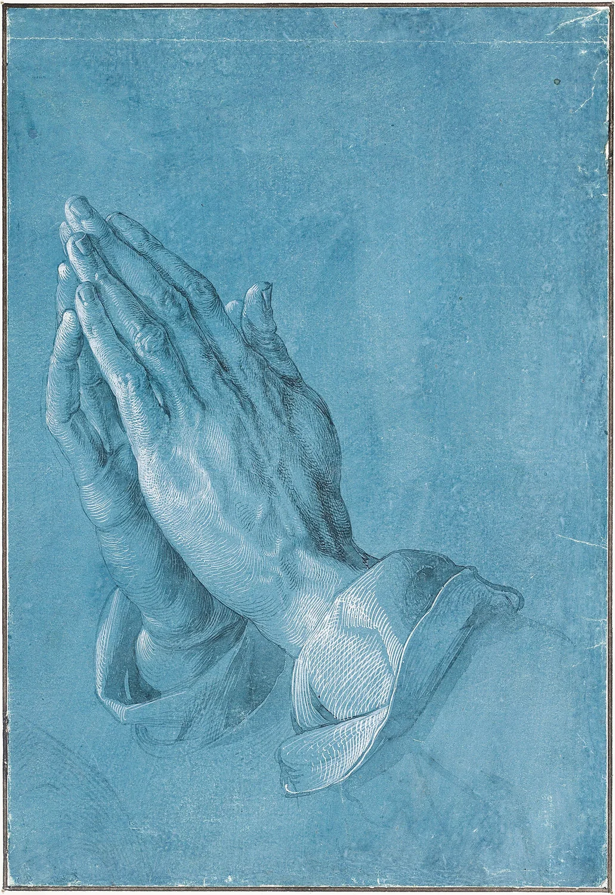

Matthew 6:9–13
Setting: teaching about prayer in the Sermon on the Mount.
Includes the requests about God’s will on earth and deliverance from evil. Uses a debt metaphor for forgiveness.
Bible studies · Grades 6–12 · 45–60 minutes
“On earth as it is in heaven.”
A short prayer. Two Gospel versions.
One word that still makes translators pause.
Explore how Jesus’ teaching connects God’s kingdom with ordinary bread, forgiveness, and the needs of a whole community.
Investigate the bread mystery ↓How can a familiar prayer hold meanings we have never noticed?
By the end: explain the prayer’s main requests, compare its Gospel settings, and distinguish a translation fact from a debated interpretation. No prior knowledge of Greek is needed.
Class plan: notice and read (10 min), compare (10 min), investigate translation (15 min), discuss and check (10–20 min). Students may study the text without being asked to recite it as a personal profession of faith.
01 / Read closely

In Matthew 6:5–15, Jesus teaches about prayer within the Sermon on the Mount. He warns against praying to impress an audience. The prayer turns from God’s name, kingdom, and will to shared human needs.
Our Father which art in heaven,
Hallowed be thy name.
Thy kingdom come.
Thy will be done in earth,
as it is in heaven.
Give us this day our daily bread.
And forgive us our debts,
as we forgive our debtors.
And lead us not into temptation,
but deliver us from evil:
Notice: the prayer says our, us, and we. How does that change a request for food when a neighbor is hungry? Read Matthew 6 and its notes.
02 / Two witnesses

These are summaries of the Gospel forms represented in modern critical editions, not two competing reconstructions of Jesus’ exact spoken words.
Setting: teaching about prayer in the Sermon on the Mount.
Includes the requests about God’s will on earth and deliverance from evil. Uses a debt metaphor for forgiveness.
Setting: a disciple asks Jesus to teach them to pray.
A shorter form. Names sins explicitly, then refers to forgiving those indebted to us. Asks for bread day by day.
Text detective: some later manuscripts expand Luke toward Matthew’s wording. Read each Gospel in its own setting before combining them. Read Luke 11 and its textual notes.
03 / The word laboratory

ἐπιούσιος
Epiousios is the rare Greek adjective behind “daily” in both Gospel prayers. It is not securely attested in ordinary, independent ancient Greek usage outside early Christian texts. That leaves translators with unusually little evidence.
Choose a proposal to see what it emphasizes. These are interpretive possibilities, not a solved dictionary equation.
A proposed connection with ousia (being or substance) points toward what sustains existence. It emphasizes dependence on God for real, material needs.
Question: What counts as a necessity rather than a luxury?
04 / Across languages and centuries

Early Latin Christian usage employed cotidianum, “daily.” Around the turn of the third century, Tertullian discussed both physical provision and a spiritual reading connected with Christ. Eucharistic interpretation therefore predates Jerome.
Tertullian, On Prayer, chapter 6Jerome’s Gospel revision has supersubstantialem in Matthew and cotidianum in Luke: “supersubstantial” versus “daily.” The wording makes a spiritual reading especially visible in Matthew. It does not prove that physical bread was excluded.
Historical caution: Damasus commissioned Jerome’s revision of the Latin Gospels; the whole Vulgate was a longer, more complex project. A tidy story that Jerome changed Matthew simply to avoid repeating “today” should not be presented as an established motive.
Compare the Latin Matthew 6 · Latin Luke 11Tyndale’s 1526 New Testament and the 1611 King James Version used “daily.” The Catholic Douay-Rheims New Testament, first published in 1582, retained the Latin distinction: “supersubstantial” in Matthew and “daily” in Luke. The linked edition is the later revised Douay-Rheims text.
Compare KJV and Douay-Rheims wordingMany modern Bibles, including the Catholic NABRE and the NET, retain “daily” while notes discuss alternatives. Translation and theological interpretation are related, but distinct: a Christian can read “daily” and still understand bread sacramentally.
NABRE, Matthew 6:11 note05 / More hidden history

Matthew’s prayer uses debts; Luke names sins while retaining debt language for other people. Matthew 6:14–15 then speaks of transgressions. The familiar liturgical word “trespasses” belongs to this history of expressing moral wrongs through different English terms.
The KJV includes “For thine is the kingdom, and the power, and the glory, for ever. Amen.” Many modern editions omit or footnote it because important early witnesses lack it. A shorter doxology already appears in Didache 8: worship history and manuscript history meet here.
Didache 8 tells its readers to pray this prayer three times daily. This is evidence of an early community’s practice, not proof that every early Christian followed the same schedule.
Read Didache 8Jesus’ setting was multilingual and he likely taught this prayer in Aramaic. The Gospel forms studied here survive in Greek. Modern Aramaic reconstructions and later Syriac versions are valuable for study, but cannot simply be labeled a transcript of his exact original wording.
Temptation or testing? The Greek term can refer to testing or temptation; translations differ. This plea asks for protection. It should be read alongside James 1:13, which says God does not tempt anyone to evil. Matthew’s notes discuss the wording and doxology.
06 / Think like a translator

Partner challenge (8 minutes): choose one bread interpretation. Write a suggested English rendering, explain what it brings into focus, and name one meaning it might hide. Label your conclusion “proposal,” rather than “the only correct translation.”
Discuss: how might asking for “our bread” connect prayer to generosity? What does the forgiveness request ask of the person praying? Forgiveness does not require pretending harm never happened or remaining in an unsafe situation.
1. Rare usage limits comparisons. 2. Tertullian’s On Prayer predates Jerome. 3. The Gospel forms differ, and each has its own setting. Translation uncertainty does not mean every proposal is equally well supported.
Write one established textual fact, one debated interpretation, and one question you would ask a translator.
The Sermon on the Mount · How the Bible Reached Us · Bible Foundations pathway
Source links throughout distinguish biblical texts, early Christian interpretation, and modern translation notes. Catholic, Orthodox, and Protestant traditions share this prayer while differing in wording and interpretation.